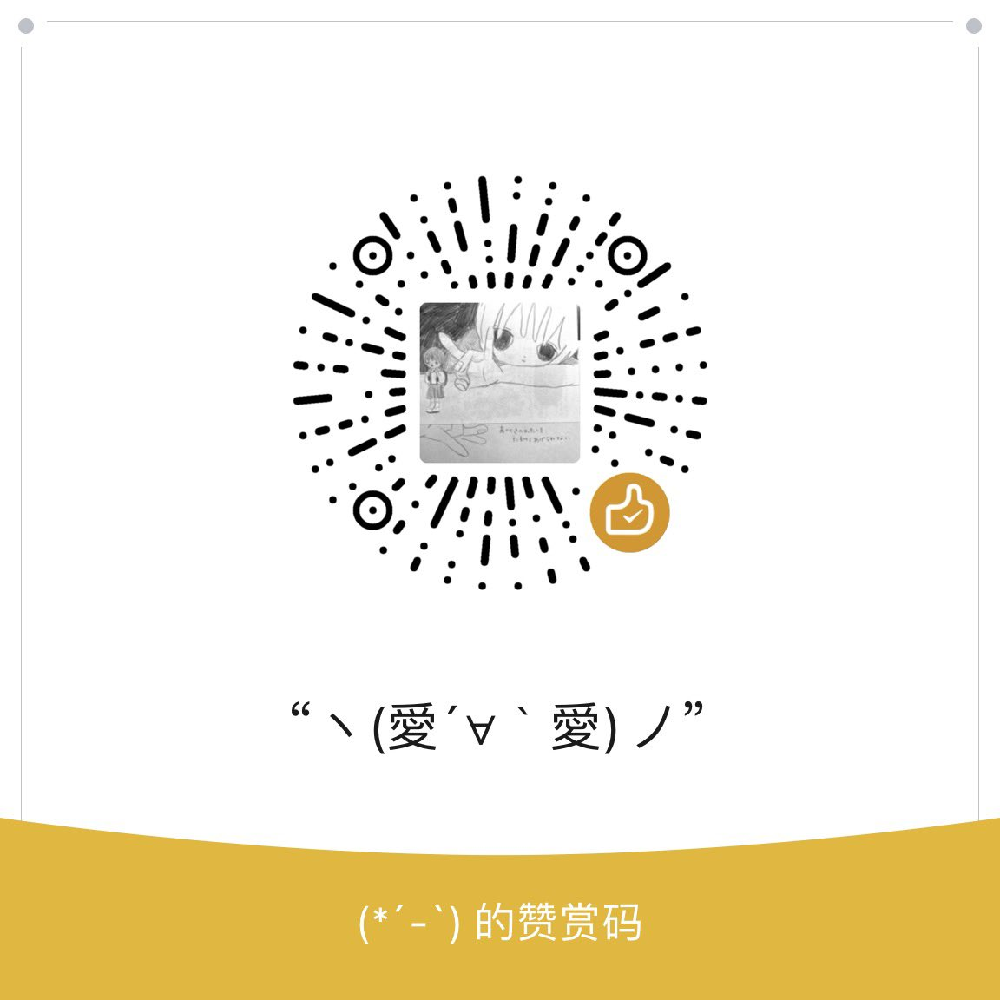

你谁
@yvvxinn400
RT @azero412420: 我是煜行 可以叫我阿零（. ◜ ω ◝. ）
目前放弃治疗疾病但在努力治疗失眠中，因为疾病导致活动能力异常无法工作，目前辞职欠债零收入中
🚪28/52/128
分别为闲聊/图片/视频，提前产出与未发布内容但不会出现🔞内容致歉
无论多少赞赏…

azero
@azero412420
我是煜行 可以叫我阿零（. ◜ ω ◝. ）
目前放弃治疗疾病但在努力治疗失眠中，因为疾病导致活动能力异常无法工作，目前辞职欠债零收入中
🚪28/52/128
分别为闲聊/图片/视频，提前产出与未发布内容但不会出现🔞内容致歉
无论多少赞赏我都会非常感激🥹谢谢大家 https://t.co/6Ejn4ESzeV